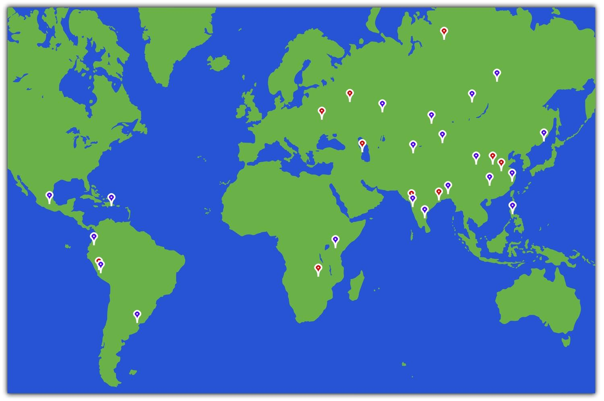
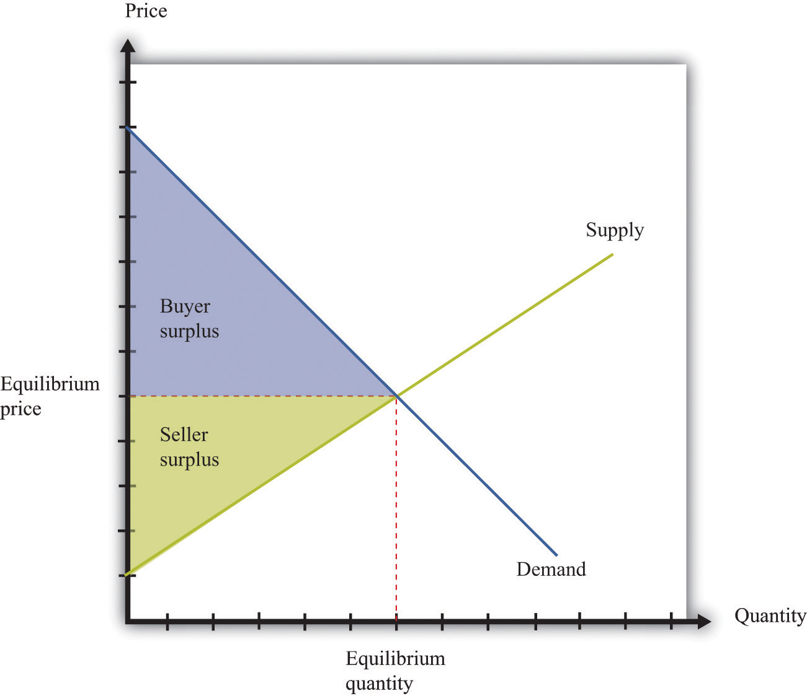

Here are some places you probably would have difficulty finding on a map:
These 10 places have the dubious distinction of being the world’s most polluted cities, according to a nongovernmental organization called the Blacksmith Institute.See http://www.worstpolluted.org. As a child, one of the authors of this book lived for a year in one of these towns. Figure 14.1 "The 30 Most Polluted Cities in the World" shows these cities plus 20 more, giving us the 30 cities in the world with the worst pollution. In some of these places, mining and smelting industries have contaminated the air or the groundwater. In some, dangerous chemicals have been improperly disposed of—often illegally. In some, there is radioactive contamination. In some, garbage and sewage pollute the groundwater, or automobile emissions pollute the air. In sum, you would not want to live in any of them.
Figure 14.1 The 30 Most Polluted Cities in the World
This map shows the locations of the 30 most polluted cities in the world, according to the Blacksmith Institute.
The consequences of such pollution are tragic. Pollution of this magnitude causes severe health problems, birth defects, and high mortality rates. For example, according to the Blacksmith Institute, life expectancy in Dzerzhinsk, Russia, is 42 for men and 47 for women. Lead pollution is directly linked to a reduction in children’s intelligence and has also been linked to increased violence.
The map reveals that many of these highly polluted cities are found in India, China, and the countries of the former Soviet Union. The richer countries of the world, such as the United States, Canada, Japan, Australia, New Zealand, and all of Western Europe, are not featured. Neither, for the most part, are the very poorest countries of the world, such as much of Africa. Severe industrial pollution seems to be at its worst in middle-income, developing countries. This does not mean that rich countries did not recently have—or do not still have—pollution problems of their own. Only a few decades ago, the Cuyahoga River in Ohio was so polluted that it caught fire; indeed river fires were once relatively commonplace in the United States. The US Environmental Protection Agency lists well over 1,000 sites as eligible for Superfund cleanup (http://www.epa.gov/superfund) because environmental contamination is judged hazardous to health. Little more than 50 years ago, air pollution killed an estimated 4,000 people in London, England, during the so-called Great Smog.
We emphasize in many places in this book that market transactions generate value in an economy. Firms produce things that people want to buy, so both firms and consumers benefit. People voluntarily work for companies, earning money they can then use to purchase goods and services while simultaneously allowing firms to produce the products that people want. These claims are correct, yet the citizens in Linfen, China, or La Oraya, Peru, could be forgiven for thinking that this is a very rosy view of how economies function in practice. Those who live in these communities around the world obviously do not like living in such polluted environments. So what is going wrong? How is it that voluntary trades made by individuals and firms can sometimes lead to such unpleasant and dangerous outcomes?
To begin our answer to this question, let us take a particular example: Mexico City, a city that also makes the list of the worst 30. The air in Mexico City contains particulate matter (think of this as soot and smog) that can cause lung disease and other bronchial problems. This pollution largely comes from automobile emissions, which are a severe problem in part because so many cars in Mexico City are old. According to the Blacksmith Institute report,Blacksmith Institute, “The World’s Worst Polluted Places,” September 2007, accessed March 14, 2011, http://www.blacksmithinstitute.org/wwpp2007/finalReport2007.pdf. even a moderate reduction in the amount of particulate matter in the Mexico City air could save thousands of lives each year.
But if everyone dislikes the pollution, why is it being produced? After all, no one is forcing the residents of Mexico City to drive their cars. They could all decide to drive much less, and if they did so, the result would be a cleaner city. Indeed, not everyone is a polluter. Particularly in richer countries, more and more people are driving electric cars or hybrids, which use a combination of electricity and fossil fuels. Such cars emit less pollution from their tailpipes. According to one study, the main reason that people purchase these cars is because they “want an environmentally friendly car.” This reason was cited by 66 percent of the respondents. The next most popular response was “I want to save money on gas,” which was cited by 16 percent of the respondents. The survey also found that half of all hybrid owners also donated money to environmental causes.Jonathan Klein, “Why People Really Buy Hybrids,” Topline Strategy Group, accessed January 31, 2011, http://www.toplinestrategy.com/green_form.htm. Of course, people can have multiple motivations for purchase. The same study concludes that only about 27 percent of hybrid users do not have a financial motivation for their purchase.
Some of these reasons are clearly self-motivated: when gasoline costs $4 or more a gallon, fuel-efficient vehicles look very attractive. However, the desire to behave in an environmentally conscious way is rather different. People like to feel that they are behaving responsibly, even if they understand that their impact on total pollution is negligible. But there is another aspect of this desire to be green that is even more intriguing. If you interview one of these individuals, you will typically learn that he sees two ways in which hybrids are a good choice for the environment: (1) they generate less pollution, and (2) they consume less oil.
Both are environmental concerns. Both address how we use up different natural resources: clean air and fossil fuels. Yet they are very different problems. In this chapter, we consider both pollution and our consumption of natural resources—including but not limited to oil—and ask,
Can we rely on markets to deal with pollution and natural resources?
We start our analysis with a familiar idea: the gains from trade. Figure 14.2 "The Gains from Trade", which also appears in other chapters in this book, illustrates one of the biggest insights of economics: voluntary transactions create value. In every voluntary transaction, both buyer and seller obtain surplus from trading. Even more striking, if these transactions take place in a competitive market, then buyers and sellers reap all the gains from trade.
Figure 14.2 The Gains from Trade
In a competitive market, total surplus (the sum of the buyer surplus and the seller surplus) is maximized.
The first section of the chapter looks at the use of clean air. To start off, we tackle this in a small-scale situation: we consider what happens if a smoker and a nonsmoker share an office. We ask under what circumstances they might be able to resolve their disagreement without outside assistance. We then explain that air pollution in Mexico City is really the same problem, albeit much larger. We show that the problem of pollution has two related aspects: (1) we cannot easily force polluters to pay for their “use” of clean air, and (2) as a result, there is a divergence between the cost of an action to an individual polluter and the cost to society as a whole.
We discuss different kinds of policies that are used to address these problems. Then we turn to our use of natural resources such as oil. We consider various kinds of resources and consider what economic theory can teach us about how these resources are likely to be used. Finally, we consider the implications for economic policy.